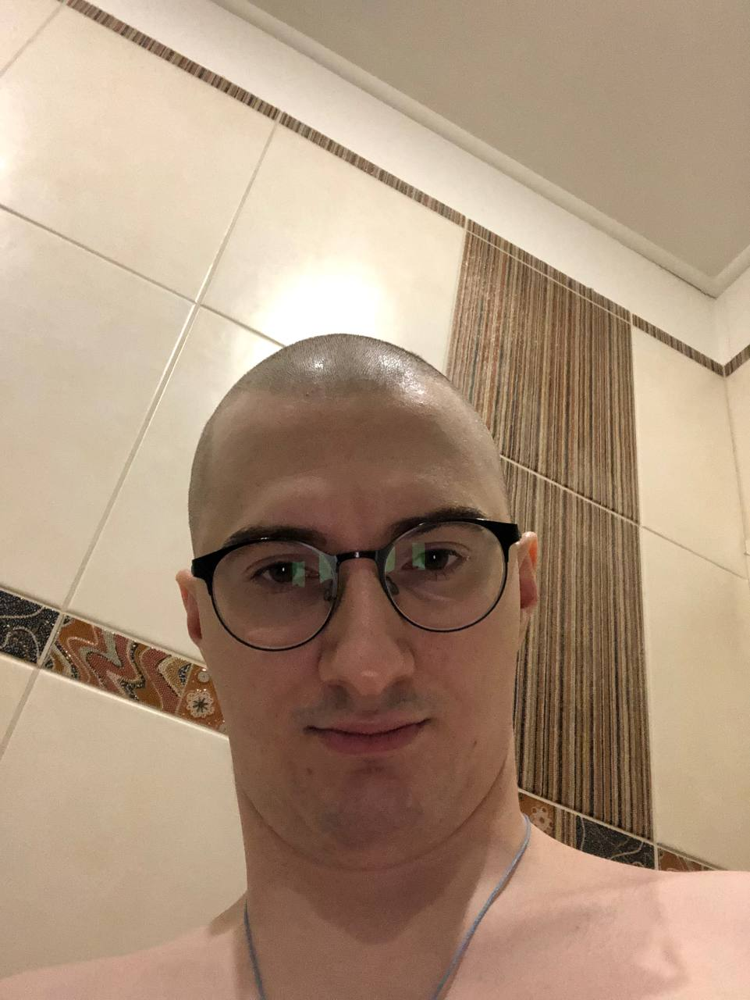

About Olesha
Olesha (born [birth year]) is a streamer and content creator known for long, entertaining gaming broadcasts. [Write here: died in [year] OR "he is still active today".] He became famous for marathon streams, speedrun challenges and charity events where viewers donate to good causes. His signature "inventions" are unusual stream formats, like the summer subathon and the hardcore challenges.
Learn more